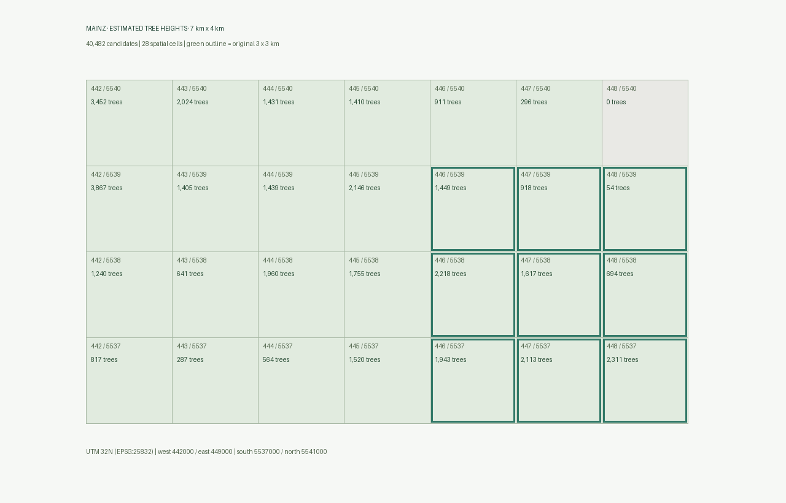

Fallbeispiel / Mainz Stadtmitte
Bäume als wiederverwendbarer 3D-Layer.
13.317 automatische Kandidaten · neun 1-km²-Kacheln · einheitliche oder geschätzte Baumhöhe.
Ein Layer, zwei Höhenvarianten
Wechseln Sie zwischen 15 m einheitlicher Modellhöhe und geschätzter Baumhöhe. Schalten Sie Bäume, Gebäude und Luftbild unabhängig. Mit „Zum Layer“ sehen Sie den vollständigen Ausschnitt; ein Klick auf einen Baum zeigt seine Metadaten.
Die Daten sind direkt über die untenstehenden URLs aus anderen Cesium-Projekten nutzbar. Ein API-Schlüssel oder eigener Server ist nicht erforderlich.
from basemap3d import Map, TreeLayer
m = Map(location=[49.99892, 8.27412], zoom_start=16)
TreeLayer(variant="uniform").add_to(m)
m.save("mainz_trees.html")
mFallbeispiel 3 · Schatten im Tagesverlauf
Vergleichen Sie am 21. Juni 09:00, 13:00 und 17:00 Uhr bei unveränderter Kamera. Schalten Sie Bäume und Gebäude einzeln aus und ein. Wechseln Sie danach auf den 21. Dezember: Wie ändern sich Richtung und Länge der Schatten?
Die Basiskarte enthält kein Luftbild mit unveränderlichen fotografierten Schatten. Schematische Kronen und geschätzte Höhen liefern eine qualitative Illustration; Blattverlust und Lichtdurchlässigkeit werden nicht simuliert. Eine quantitative Beschattungs- oder Kühlungsanalyse ist damit nicht möglich.
Schattenbeispiel öffnen →
from basemap3d import Map, TreeLayer, SunShadows
m = Map(location=[49.99892, 8.27412], distance_m=450)
TreeLayer(variant="estimated").add_to(m)
SunShadows(date="2026-06-21", hour=17).add_to(m)
m
Stabile Layer-Adressen
Einheitliche Höhe · tileset.json
Geschätzte Höhe · tileset-estimated.json
Kandidaten als GeoJSON · Bearbeitungsrahmen
Neun Kacheln und Herkunft

Automatische Baumkandidaten, kein amtliches Baumkataster. Die 29 Schätzwerte über 30 m sind zur Prüfung markiert. Der Bearbeitungsrahmen umfasst 9 km²; die verwendete Mainz-Maske begrenzt die tatsächlich ausgewertete Fläche.
DOM1/DGM1 2023 und RGBI-Luftbild 2024; Bäume schematisch modelliert und auf basemap.de DGM5 ausgerichtet. Der Layer benötigt dieses Gelände für die vorgesehene Höhenlage. Die zwei Detailstufen je Kachel dienen der Darstellung, nicht einer doppelten Zählung.
©GeoBasis-DE / LVermGeoRP 2026, dl-de/by-2-0 [Daten bearbeitet]; © GeoBasis-DE/BKG 2026; © OpenStreetMap contributors, ODbL.
English layer documentation → · Provenance → · Geschätzte Höhe direkt öffnen →